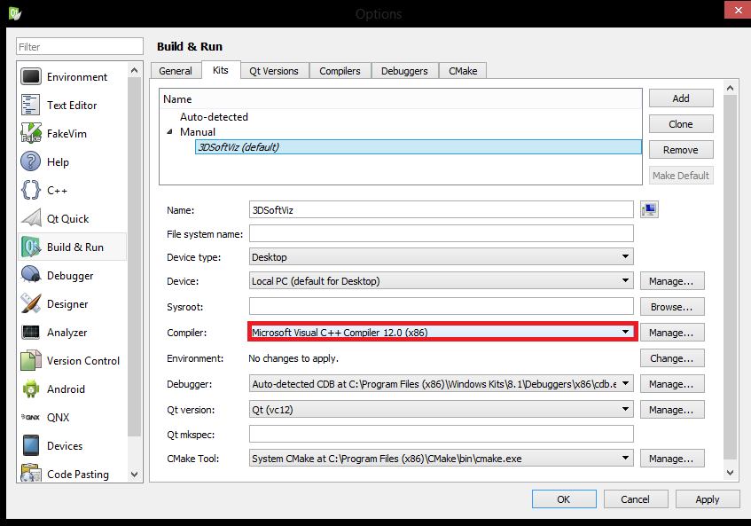

Migrácia na MSVC2013¶
- Nainštalujte si Microsoft Visual Studio 2013 (x86)
Môžete použiť verziu z MS DreamSpark. Testované na MS Visual Studio Ultimate 2013 a MS Visual Studio Pro 2013 bez updatov.
Note
Nie Visual Studio Express!
Zálohujte staré súbory
- OpenSceneGraph
- Qt (v ktorom sa má nachádzať aj váš QtCreator)
Umiestnite nové súbory namiesto starých (nič neprepisujte)
QtCreator
Väčšina z nás má QtCreator umiestnený v priečinku Qt, ak si prajete naďalej používať váš QtCreator, tak si ho presuňte zo zálohovaného priečinku starého Qt do nového Qt.
Alternatívne sa už nachádza jeden QtCreator (3.6.0) v novom priečinku Qt, tak môžete používať ten, alebo ho môžete zmazať. Spustiteľný súbor sa nachádza v:
/Qt/Qtcreator-3.6.0/Tools/QtCreator/bin/qtcreator.exe
- Rapid EE
V Rapid EE zmeňte nasledujúce:
PATH
- %OSG_DIR%ThirdPartyVC10x86bin
- %OSG_DIR%ThirdPartyVC12x86bin
- %OPENCV_DIR%buildx86vc10bin
- %OPENCV_DIR%buildx86vc12bin
CMAKE_INCLUDE_PATH
- %OSG_DIR%ThirdPartyVC10x86include
- %OSG_DIR%ThirdPartyVC12x86include
CMAKE_LIBRARY_PATH
- %OSG_DIR%ThirdPartyVC10x86lib
- %OSG_DIR%ThirdPartyVC12x86lib
- %OPENCV_DIR%buildx86vc10lib
- %OPENCV_DIR%buildx86vc12lib
Ak používate iný QtCreator, nezabudnite zmeniť cestu v PATH napr. na:
- %QT_DIR%Qtcreatorbin
- %QT_DIR%Qtcreator-3.6.0ToolsQtCreatorbin
- QtCreator
- Otvorte Tools(Menu) > Options…
- Prejdite na ľavú kartu Build & Run
Karta QtVersions
- Skontrolujte, či nenastali problémy s rozoznaním Qt
- Qt verzia by mala byť 4.8.6
Karta Compilers
- Skontrolujte či sa v zozname nachádza Microsoft Visual C++ Compiler 12.0 (x86)
Karta Kits
- V predvolenom profile si zvoľte pre Compiler: Microsoft Visual C++ Compiler 12.0 (x86)
Príklad:

return EXIT_SUCCESS;